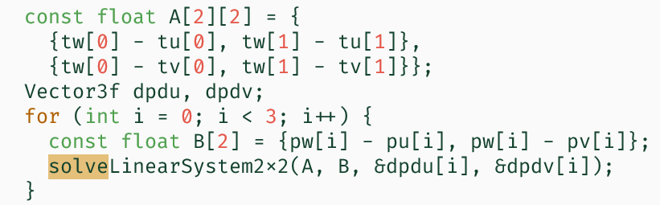
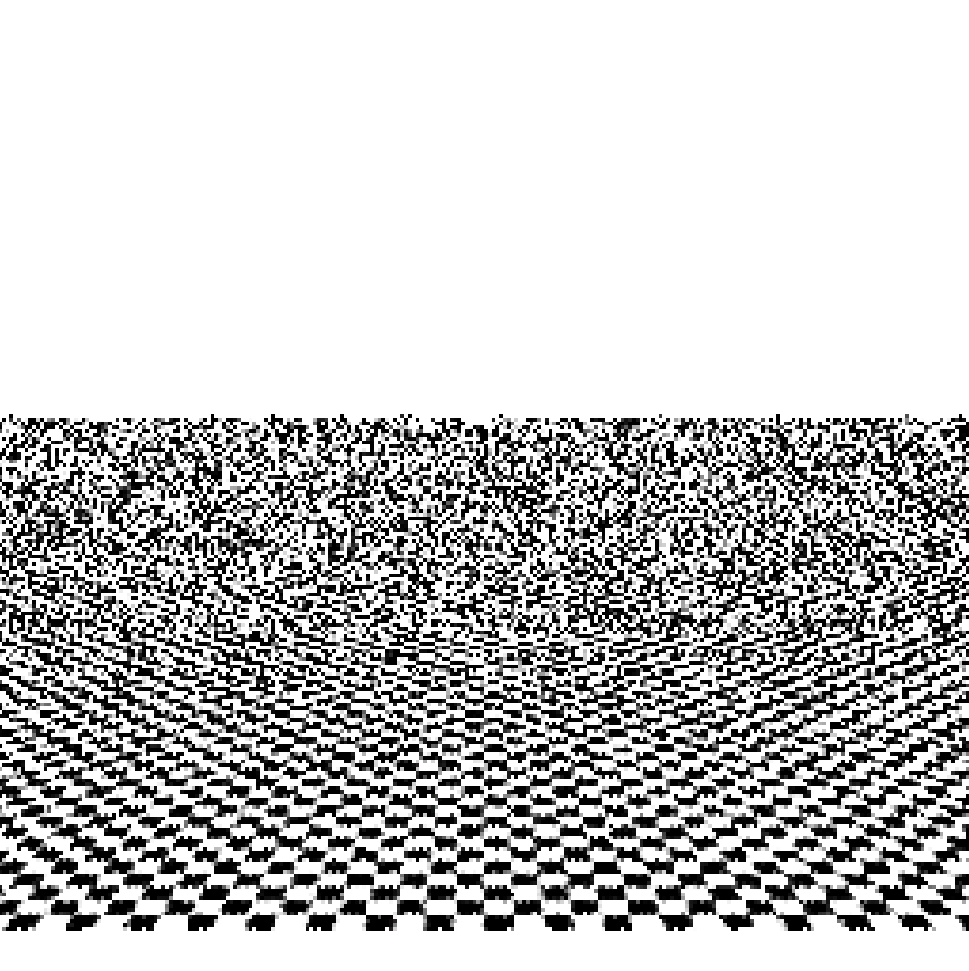
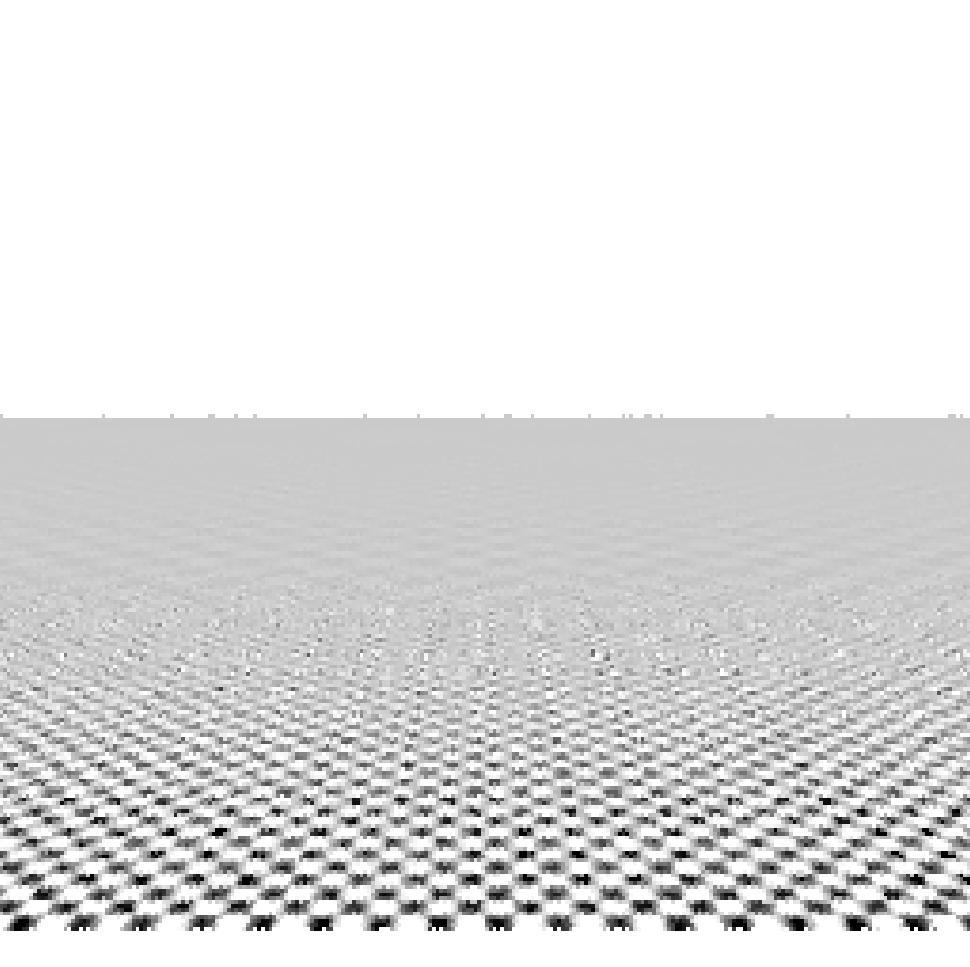
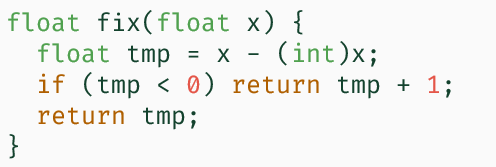
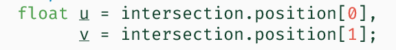
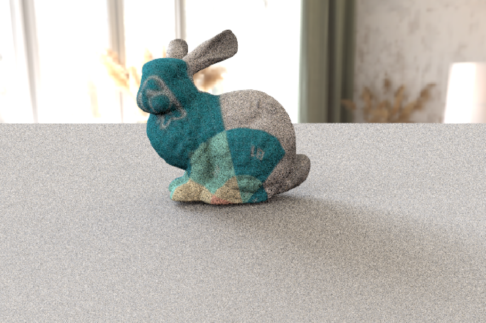
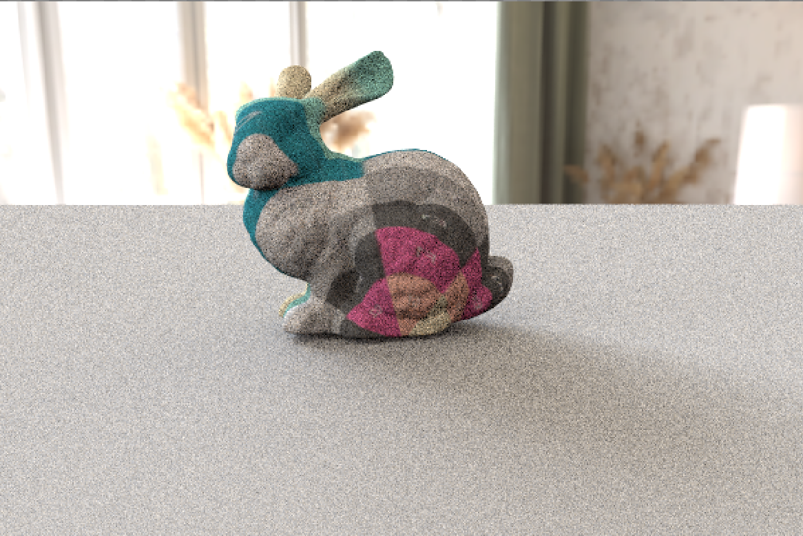
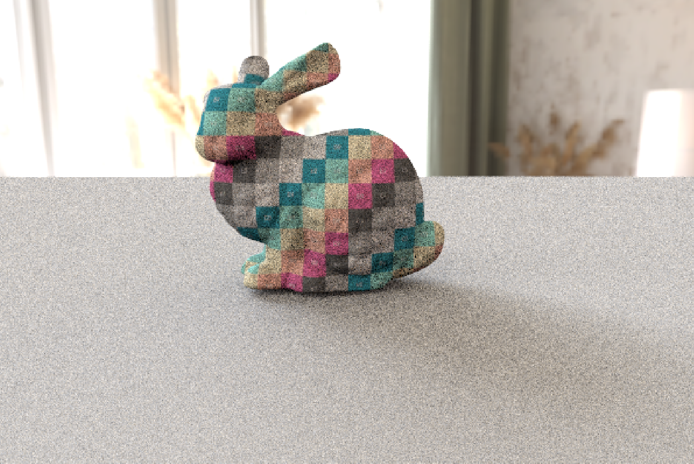
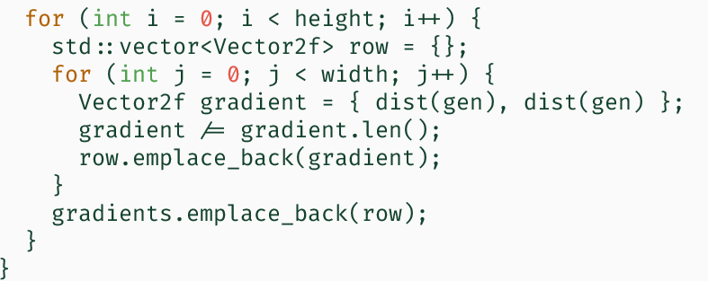
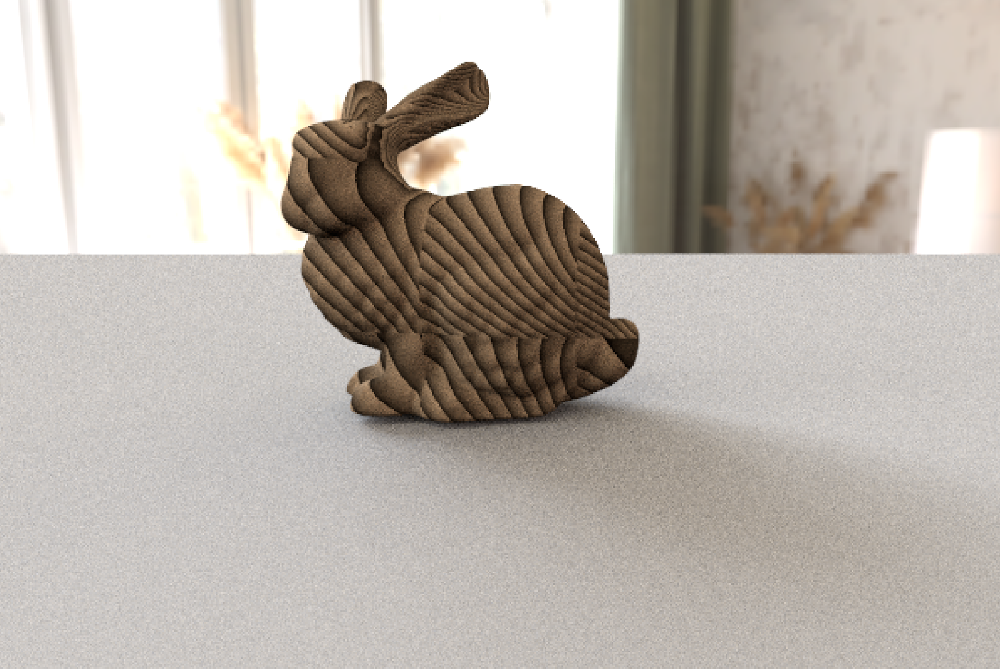

图形绘制技术Lab2
条评论图形绘制技术 Lab2
纹理的采样、映射以及生成
光线微分
根据 $p_i - p_0 = \Delta u \dfrac{\partial p}{\partial u} + \Delta v \dfrac{\partial p}{\partial v}$
将其分成3个维度计算，以 $u$ 为例，$p(w, u, v)$ 是点坐标，$t(u, v)$ 是纹理坐标，而我们先前假设，$\dfrac{\partial p}{\partial u}$ 和 $\dfrac{\partial p}{\partial v}$ 都是常数：
$p_1.u - p_0.u = \Delta t_1.u \dfrac{\partial p.u}{\partial t.u} + \Delta t_1.v \dfrac{\partial p.u}{\partial t.v}$
$p_2.u - p_0.u = \Delta t_2.u \dfrac{\partial p.u}{\partial t.u} + \Delta t_2.v \dfrac{\partial p.u}{\partial t.v}$
故可以写成：
2阶方阵中 $\Delta t_1.u$ 可以通过计算 $t_1, t_0$ 的 $u$ 方向差值得到，其余同理；
左边可以计算三角形点坐标差得到。
进而调用 solveLinearSystem2x2 可求得 $\dfrac{\partial p.u}{\partial t.u}$ 和 $\dfrac{\partial p.u}{\partial t.v}$，即$\dfrac{\partial p}{\partial u}$ 和 $\dfrac{\partial p}{\partial v}$ 在 $u$ 方向上的分量。
$v, w$ 方向同理。
求解代码如下：
双线性滤波结果：
光线微分结果：
纹理映射
球面映射：计算出方位角后，修正到 [0, 1]
用于修正的fix函数：
圆柱体：v 取归一化的 z 坐标
平面：直接取 x，y 坐标



木纹
在构造函数中读取木纹的属性并生成随机的单位向量
在 evaluate 中，根据坐标，使用 Berlin 噪声和双线性插值计算颜色，与讲义一致
